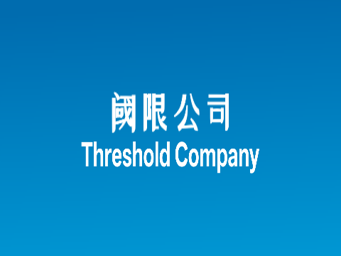
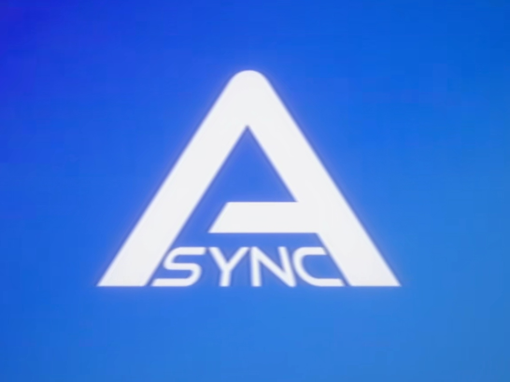
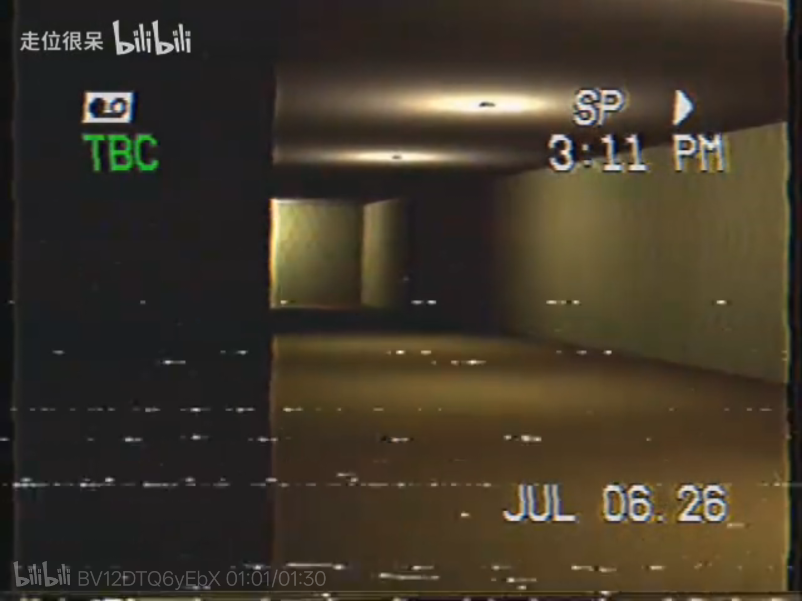
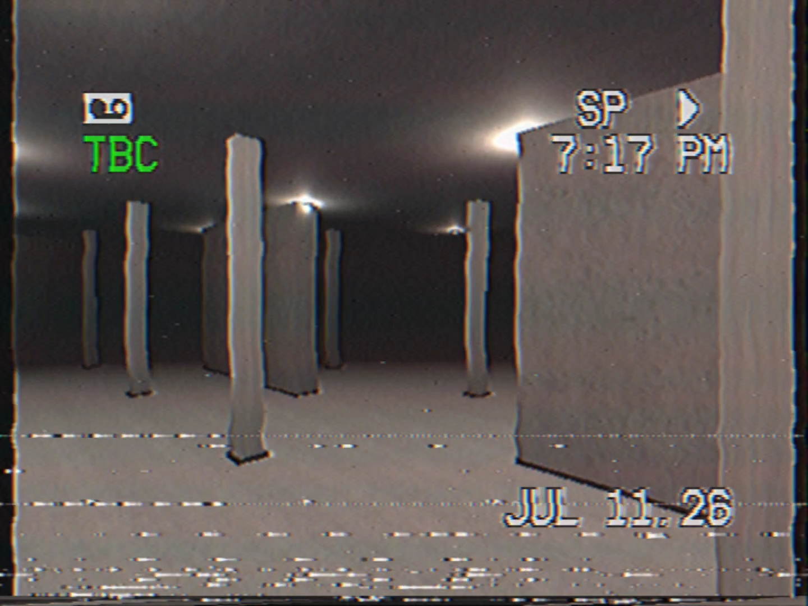
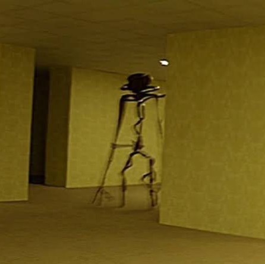

世界观总介绍
T版后室（TCY版后室），是以Kane Pixels（K版）影像后室为原型创作的独立平行衍生宇宙，整体基调偏向纪实探索，恐怖程度较低，拥有原创势力和同样为区域制空间的设定。
站点使用说明
点击上方导航按钮切换不同分类档案
阈限研究所（对外俗称阈限公司）

基础信息
创立时间：2023年，一批关注Async外流后室影像的民间科研爱好者搞出来的公司，是T版本土核心科研组织。
目的：看看后室长啥样，顺便再看看能不能利用后室赚点小钱钱。
圈内知名事件
研究所一个不知道咋想的研究员，不惜跨越千里，来到异步研究所的门口，敲了几下门，吓了一下里面的人后，便偷走了一辆小车车跑路了。
专项研究项目
探索后室看看能不能赚点小钱钱
T版的Async异步公司

存续状态
2026年依旧合法注册存续但整体处于近乎半废弃状态。
人员构成
没多少人在里面办公，甚至也有说法说只是做做样子，实际上已经停止了研究，当然这是谣言，异步公司还在研究后室，但不多
T版后室空间架构规则
核心模式：区域制
后室整体为连贯的阈限空间，我们划分为不同的区域；区域之间存在肉眼可见隔墙，也有可能没有隔墙，区域之间的隔墙可以直接走过去。
全域时间异常
时序错乱现象无规律发生，例如标注拍摄于2026年7月7日的录像，会在后室内部时间2024年8月2日被回收，原理不知道。
T版后室影像档案体系
闯入人群结构
闯入主体以成年普通流浪者为主，青少年为次要闯入群体。
影像产出逻辑
成年人日常极少随身携带摄像设备，最终仅留存唯一一份成人原生录像孤本；青少年好奇心更强、乐于主动拍摄探索过程，是后室影像素材的核心来源。
影像流出方式
绝大多数闯入者都活了下来，大部分影像为幸存者主动投稿公开，也有录像的持有者失踪只留下了一个相机在原地，我们甚至连相机是不是在他原本的位置上都不知道。
档案分类
青少年主流投稿影像和意外寻到的录像。
区域0（Zone 0）

环境描述
根据调查来看，外观与W版和F版所记载的Level 0高度相似，当然了，W版指的是老版本的Level 0也就是教学关卡而不是现在的阈界，这你们应该也能看出来区域一整体就是那该死的黄色壁纸和潮湿的黄色地毯以及那该死的黄色的天花板，天花板的灯应该是日光灯，像是个圆形，不过看着挺小，是真的很吵，听着想让人把它们给拆了，虽然的确也能拆掉。
已确认威胁：精神污染现象和饿死与渴死
精神污染，很直白的名字，它的主要来源就两种：
1. 红色光：多名闯入者回收影像证实，被红光照射约10分钟会疯掉然后撞墙把自己撞死，但至于为什么我们也不清楚。
2. 完全黑暗的区域：这其实很合理，在现实中一直待在黑暗的区域也会疯掉的，不过在这里可以确定的是它属于精神污染，因为它同样是10分钟就会疯掉，这绝对不正常，因此我们认为它是精神污染，不过也就10个人因此而死，因为完全黑暗的区域太少见了，一盏灯灭了其他地方的灯一般也能弥补这个黑掉的灯。
资源勘探结论
研究所多次探索确认区域0几乎没有可获取的食物和水源，特别容易饿死和渴死，不过运气够好可以拿到一些后室模仿现实搞出来的东西，比如说汉堡或可乐，或者是家常菜，比如说可乐鸡翅什么的，但它们往往很难吃…
区域1（Zone 1）

环境概述
它可以从区域0直接到达，但是一般都会有个隔墙，不过很明显的！区域一的墙壁是混凝土制作的，并且会有一些很细的柱子规律的在空间中排列，区域0能够前往区域1的墙也是混凝土做的，所以你可以直接找到，区域0经常出现可以前往区域1的墙！想到区域一，你要做的就是直接朝那个墙走去，因为是能够直接穿过它的，区域一切出回到现实的概率也比区域0要大上不少。
威胁评估
目前来看只有饥饿和脱水主要威胁。不过实际上不太可能有人饥饿和脱水，因为这里食物太多了！
食物和水
一共有两种，一种是现实世界掉进去的食物还有水，这种挺少见，区域一大部分的食物和水都是后室试图模仿现实世界的时候搞出来的，前面说过了，区域一更经常生成一些超级好吃的食物，比如说远超于现实世界的美味的汉堡可乐鸡翅或者…算了，不说了，再说就要饿了，这些食物完全没有副作用，或者说有，就是你容易吃撑，别吃撑了！吃饱喝足后，就可以去放心的找回到区域0或者前往现实世界的那堵墙了，你也可以顺一点食物回现实世界吃。
实体
已知的实体只有细菌，关于细菌的介绍可以去实体分类看
跨界异常交融区（非原生空间）
概述
所有区域都有一个特点：
1. 部分区域可稳定连通Wikidot（W版）后室层群
2. 部分区域可稳定连通Fandom（F版）后室层群
出入口位置谁也不确定会不会变，但是只有在W或F版有对应层级的才可能会有这种问题，比如说区域0可能会到达W或F版的Level 0，某个区域在F或W版没有对应的话，则不会受此影响
目前阈限研究所已收录的影像中无该实体出现，此处使用异步公司的图片

细菌
细菌的介绍
不同于K版、 T版的细菌战斗力极低，常规枪械即可快速击杀，也可以用棍棒击倒后用刀拆解击杀，细菌也出现过被流浪者拿来充当烤串签使用的情况。